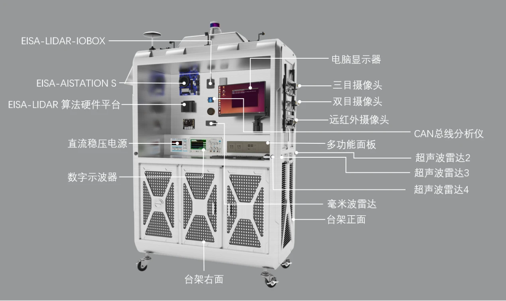

设备概况
用户手册标注设备为“智能汽车传感与感知系统 EISA-SS”。台架集成多类智能汽车传感器，可移动至室外开展数据采集与测试。

传感器与接口
- 视觉：双目摄像头、单目摄像头、远红外摄像头与环视系统。
- 测距：激光雷达、毫米波雷达、超声波雷达。
- 定位：GNSS / IMU 组合导航与卫星天线。
- 计算与调试：算法盒子、工控机、CAN 分析仪、示波器和电源。
手册主要章节
- 产品简介和整体结构。
- 主要配件与产品参数。
- 超声波雷达测试软件。
- 毫米波雷达测试软件。
- 360°环视摄像头测试软件。
- 激光雷达测试软件。
- 仿真模拟软件。
使用前的核对项
将手册中的配件列表与实物逐项对应，确认电源、线束、总线接口和传感器安装位置。具体接线与上电步骤以本机手册和负责人指导为准。
原始资料
资料目录：国汽 / 2、智能传感器技术应用。包含“传感器台架 - 用户手册.docx”、课程资料、厂家手册与配套软件。本页为导读，原始大文件未上传到静态网站。